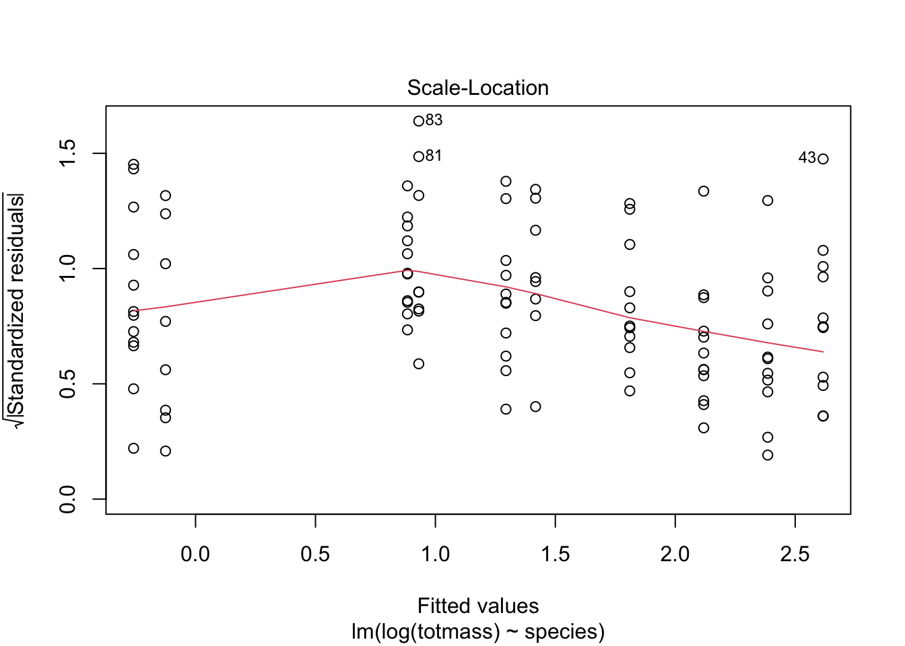
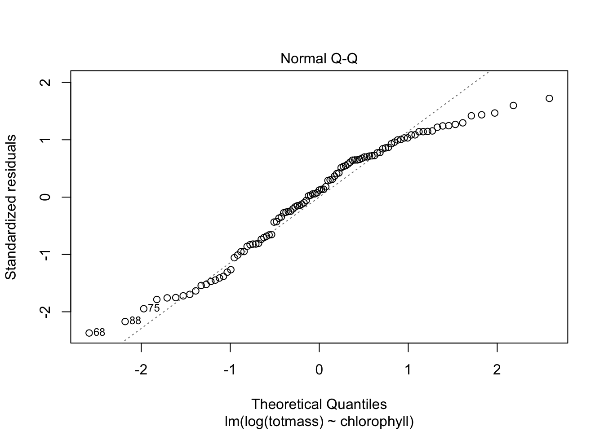
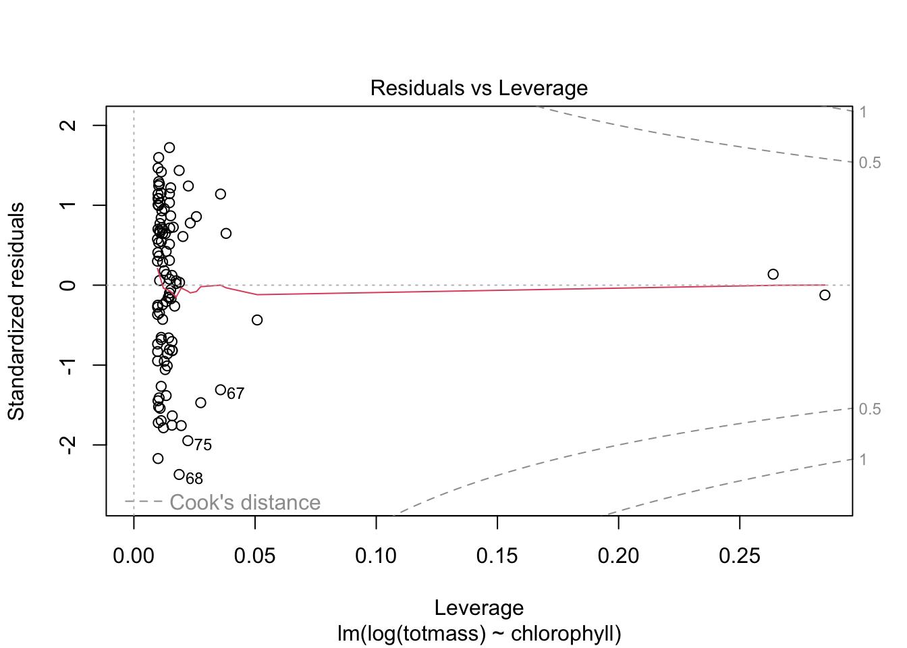

library(tidyverse)library(here)library(janitor)library(ggeffects)library(performance)library(naniar) # or equivalentlibrary(flextable) # or equivalentlibrary(car)library(broom)# would be nice to havelibrary(corrplot)library(AICcmodavg)library(GGally)library(MuMIn)
Figure 1: Missing Data. Number of missing data entries on the x-axis and number of variables on the y-axis. Lines correspond to number of missing data values for each variable.
(example writing) To determine the relationships between numerical variables in our dataset, we calculated Pearson’s r and visually represented correlation using a correlation plot.
Code
# calculate Pearson's r for numerical values onlyplant_cor <- plant_subset %>%select(feedlevel:num_phylls) %>%# diagonals show correlation between variables and themselves = 1cor(method ="pearson")# creating a correlation plot (visual representation of correlation matrix); larger shapes mean greater correlation; color represents directioncorrplot(plant_cor,# change the shape of what's in the cellsmethod ="ellipse", # add correlation coefficients into plotaddCoef.col ="black" )
Create a plot of each variable compared against the others
To determine how species and physiological characteristics predict biomass, we fit multiple linear models.
Code
# null = no predictors in modelnull <-lm(totmass ~1, data = plant_subset)# full = all potential predictors in modelfull <-lm(totmass ~ species + feedlevel + sla + chlorophyll + amass + num_lvs + num_phylls, data = plant_subset)
We visually assess normality and homoskedasticity of residuals using diagnostic plots for the full model:
Code
par(mfrow =c(2, 2))plot(full)
normality: no! check_normality function said residuals were not normal homoskedasticity: residuals vs fitted shows a cone shaped distribution of residuals with the data being more clumped at the beginning before becoming wider across the x-axis; therefore the residuals are heteroskedastic; check_heteroscedasticity confirmed this as well
We also tested for normality using the Shapiro-Wilk test (null hypothesis: variable of interest (i.e residuals) are normally distributed).
We tested for homoskedasticity using the Breusch-Pagan test (null hypothesis: variable of interest has constant variance).
Code
# in writing make sure to say what test is being done for check_normalitycheck_normality(full)
Warning: Non-normality of residuals detected (p < .001).
# log function = natural log# transforming data into natural log form to create normality and homoscedasticity# when transforming, you're only concerned with the response variable, not the predictorsnull_log <-lm(log(totmass) ~1, data = plant_subset)full_log <-lm(log(totmass) ~ species + feedlevel + sla + chlorophyll + amass + num_lvs + num_phylls, data = plant_subset)# assumptions of linear regression are met using log transformationplot(full_log)
Code
check_normality(full_log)
OK: residuals appear as normally distributed (p = 0.107).
Code
check_heteroscedasticity(full_log)
OK: Error variance appears to be homoscedastic (p = 0.071).
We evaluated multicollinearity by calculating generalized variance inflation factor and determined that there is no multicollinearity because the GVIF values were are less than 5, meaning none of the predictors were inflating the R^2 value.
try some more models:
addressing the question: what set of predictor variables best explains the response? -maximizes variance but minimizes complexity
Code
model2_log <-lm(log(totmass) ~ species, data = plant_subset)
check assumptions for model 2:
Code
plot(model2_log)

Code
check_normality(model2_log)
OK: residuals appear as normally distributed (p = 0.374).
Code
# residuals are normally distributedcheck_heteroscedasticity(model2_log)
OK: Error variance appears to be homoscedastic (p = 0.100).
Code
# variances appear homoscedastic
model 3!
Code
model3_log <-lm(log(totmass) ~ chlorophyll, data = plant_subset)
check assumptions for model 3:
Code
plot(model3_log)


Code
check_normality(model3_log)
Warning: Non-normality of residuals detected (p = 0.002).
Code
# non normality of residuals detectedcheck_heteroscedasticity(model3_log)
OK: Error variance appears to be homoscedastic (p = 0.546).
Code
# error variance appears homoscedastic
model 4:
Code
model4_log <-lm(log(totmass) ~ feedlevel, data = plant_subset)
check assumptions for model 4:
Code
plot(model4_log)
Code
check_normality(model4_log)
Warning: Non-normality of residuals detected (p = 0.018).
Code
# non normality of residuals detectedcheck_heteroscedasticity(model4_log)
OK: Error variance appears to be homoscedastic (p = 0.261).
Code
# variance appears homoscedastic
compare models using Akaike’s Information cirterion (AIC) values: - looks for simplest model that explains the most variance - compromise between complexity of model and how well model predicts the response
table <-tidy(full_log, conf.int =TRUE) %>%# change the p-value numbers if they're really small# change the estimates, stan error, and t-statistics to round to __ digits# using mutate# make it into a flextableflextable() %>%# fit to the viewerautofit()table
# report results on scale of original variable, not log transformation; must be transparent that a log transformation was conducted and why you did it; make sure to emphasize results are on original scale# all else held constant (constant = adjusted for values), the predicted biomass for each species are ("predicted" within CI)